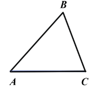
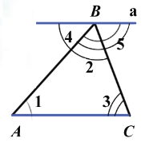
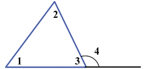

Теорема
Сумма углов треугольника равна 1800
Дано: △ABC
Доказать: ∠A+∠B+∠C=1800
Доказательство:
Нам дан △ABC

Проведем прямую a ∥ AC, проходящую через вершину B и обозначим углы.

Углы 1 и 4; 3 и 5 будут являться накрест лежащими углами при параллельных прямых a и AC, секущих AB и BC соответственно, ⇒ ∠4 =∠1, ∠5 =∠3.
Из построения мы видим, что сумма углов 4, 2 и 5 равна развёрнутому углу с вершиной B, значит ∠4+∠2+∠5 = 1800. ⇒, учитывая то, что ∠4 =∠1, ∠5 =∠3, можем записать, что ∠1+∠2+∠3 = 1800, или ∠A+∠B+∠C = 1800. Теорема доказана.
Внешний угол треугольника - это угол, смежный с каким-нибудь углом этого треугольника.
Теорема
Внешний угол треугольника равен сумме двух углов треугольника, не смежных с ним
Доказательство:
Пусть нам дан треугольник, в котором∠3 и ∠4 смежные (т.е. ∠4 является внешним углом данного треугольника)

Так как данные углы смежные мы можем записать, что ∠3 +∠4 = 1800, а по теореме о сумме углов треугольника (∠1 +∠2) + ∠3 = 1800. Из данных выражений мы видим, что ∠4 = ∠1 +∠2. Теорема доказана.